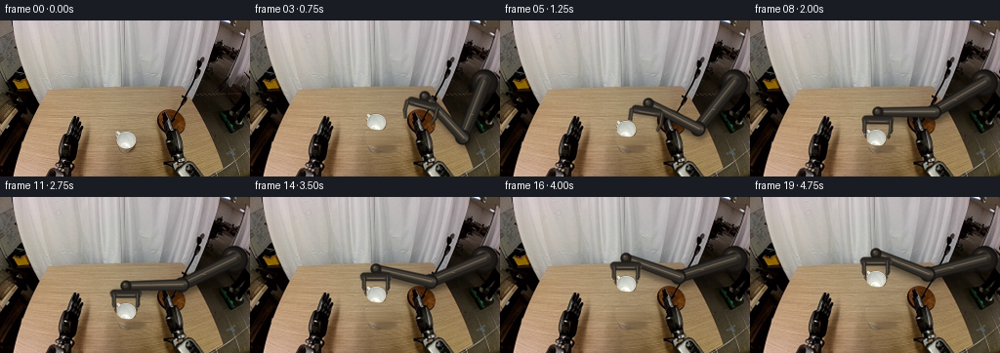
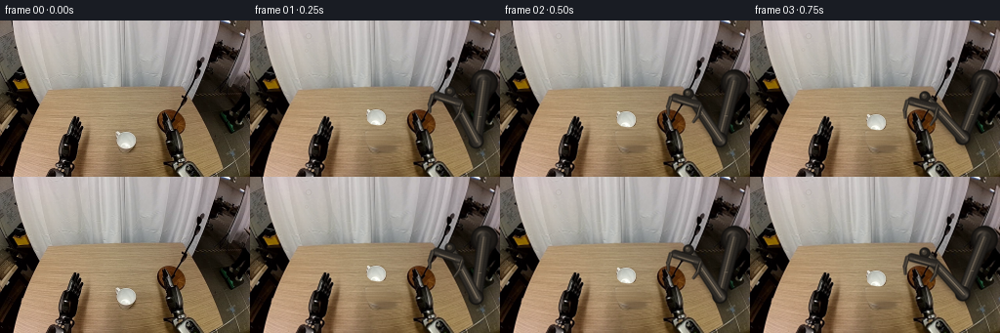
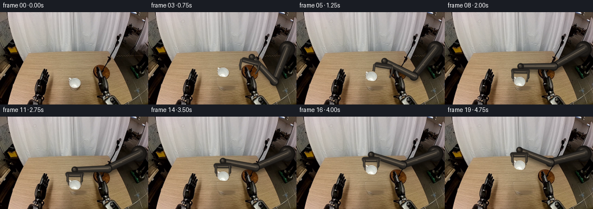
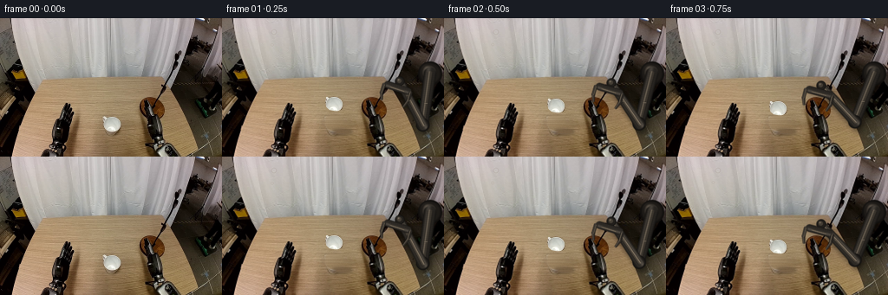

CODING AGENTS AS PIXEL WORLD MODELS
traex/DeepSeek-V4.1-Flash · common50_0031
点击播放 · 原生 RGB 像素
逐轮保存的候选
回放视频、检查图与代码变化。
每份候选均可单独播放。实际图片检查记录在下方工具轨迹中。
候选 01播放与检查图
点击播放 · 原生 RGB 像素


展开代码变化
--- 上一保存版本
+++ 本次保存版本
@@ -0,0 +1,431 @@
+"""Generate the 20-frame right-gripper mug-lifting sequence."""
+
+from pathlib import Path
+
+import numpy as np
+from PIL import Image, ImageDraw, ImageFilter
+
+import artifact_io
+
+
+W, H = 256, 160
+N_FRAMES = 20
+SS = 4
+
+CASE_DIR = Path(__file__).resolve().parent
+
+
+def smoothstep(t):
+ t = np.clip(t, 0.0, 1.0)
+ return t * t * (3.0 - 2.0 * t)
+
+
+def polygon_mask(points, scale=1):
+ image = Image.new("L", (W * scale, H * scale), 0)
+ draw = ImageDraw.Draw(image)
+ draw.polygon([(float(x * scale), float(y * scale)) for x, y in points], fill=255)
+ if scale != 1:
+ image = image.resize((W, H), Image.Resampling.LANCZOS)
+ return np.asarray(image, dtype=np.float32) / 255.0
+
+
+def ellipse_mask(cx, cy, rx, ry):
+ yy, xx = np.mgrid[0:H, 0:W]
+ return np.clip(1.25 - (((xx - cx) / rx) ** 2 + ((yy - cy) / ry) ** 2), 0.0, 1.0)
+
+
+def clean_table(image, mask):
+ """Reconstruct the table behind the mug with horizontal grain interpolation."""
+ clean = image.astype(np.float32).copy()
+ mask_bool = mask > 0.01
+ rng = np.random.default_rng(31)
+
+ for y in range(H):
+ xs = np.flatnonzero(mask_bool[y])
+ if not len(xs):
+ continue
+ runs = np.split(xs, np.flatnonzero(np.diff(xs) > 1) + 1)
+ for run in runs:
+ x0, x1 = int(run[0]), int(run[-1])
+ left_x = max(0, x0 - 4)
+ right_x = min(W - 1, x1 + 4)
+ left = image[y, left_x].astype(np.float32)
+ right = image[y, right_x].astype(np.float32)
+ blend = np.linspace(0.0, 1.0, x1 - x0 + 3)[1:-1, None]
+ fill = left[None] * (1.0 - blend) + right[None] * blend
+
+ # A very small amount of grain avoids a visibly interpolated stripe.
+ grain = rng.normal(0.0, 1.15, (len(run), 1)).astype(np.float32)
+ fill = np.clip(fill + grain, 0.0, 255.0)
+ clean[y, x0:x1 + 1] = fill
+
+ # Feather only the reconstructed region back into the untouched image.
+ alpha = np.asarray(
+ Image.fromarray((mask * 255).astype(np.uint8)).filter(ImageFilter.GaussianBlur(0.65)),
+ dtype=np.float32,
+ )[:, :, None] / 255.0
+ return np.clip(clean * alpha + image.astype(np.float32) * (1.0 - alpha), 0, 255)
+
+
+def add_soft_ellipse(image, cx, cy, rx, ry, color, opacity, blur=1.0):
+ layer = Image.new("RGBA", (W * SS, H * SS), (0, 0, 0, 0))
+ draw = ImageDraw.Draw(layer)
+ box = [(cx - rx) * SS, (cy - ry) * SS, (cx + rx) * SS, (cy + ry) * SS]
+ draw.ellipse(box, fill=tuple(color) + (int(255 * opacity),))
+ if blur:
+ layer = layer.filter(ImageFilter.GaussianBlur(blur * SS))
+ layer = layer.resize((W, H), Image.Resampling.LANCZOS)
+ out = image.convert("RGBA")
+ out.alpha_composite(layer)
+ return out.convert("RGB")
+
+
+def composite_rgb(image, mask, rgb):
+ arr = np.asarray(image, dtype=np.float32)
+ a = mask[:, :, None]
+ arr[:] = arr * (1.0 - a) + np.asarray(rgb, dtype=np.float32)[None, None, :] * a
+ return Image.fromarray(np.clip(arr + 0.5, 0, 255).astype(np.uint8), "RGB")
+
+
+def draw_capsule(image, p0, p1, r0, r1, base_rgb, light_bias=-0.30, texture=1.0):
+ """Draw a shaded tapered metal capsule directly over an RGB image."""
+ p0 = np.asarray(p0, dtype=np.float32) * SS
+ p1 = np.asarray(p1, dtype=np.float32) * SS
+ r0 *= SS
+ r1 *= SS
+ pad = int(np.ceil(max(r0, r1) + 2 * SS))
+ x0 = max(0, int(np.floor(min(p0[0], p1[0]))) - pad)
+ y0 = max(0, int(np.floor(min(p0[1], p1[1]))) - pad)
+ x1 = min(W * SS, int(np.ceil(max(p0[0], p1[0]))) + pad)
+ y1 = min(H * SS, int(np.ceil(max(p0[1], p1[1]))) + pad)
+ if x0 >= x1 or y0 >= y1:
+ return image
+
+ yy, xx = np.mgrid[y0:y1, x0:x1]
+ px = xx.astype(np.float32) + 0.5
+ py = yy.astype(np.float32) + 0.5
+ vx, vy = p1 - p0
+ length = max(float(np.hypot(vx, vy)), 1.0)
+ ux, uy = vx / length, vy / length
+ along = (px - p0[0]) * ux + (py - p0[1]) * uy
+ t = np.clip(along / length, 0.0, 1.0)
+ nearest_x = p0[0] + t * vx
+ nearest_y = p0[1] + t * vy
+ distance = np.hypot(px - nearest_x, py - nearest_y)
+ radius = r0 + (r1 - r0) * t
+ edge = radius - distance
+ alpha = np.clip(edge / (1.35 * SS) + 0.5, 0.0, 1.0)
+
+ side = ((px - p0[0]) * uy - (py - p0[1]) * ux) / np.maximum(radius, 1.0)
+ side = np.clip(side, -1.15, 1.15)
+ highlight = np.exp(-((side - light_bias) / 0.34) ** 2)
+ edge_dark = smoothstep((np.abs(side) - 0.62) / 0.42)
+ brush = 1.0 + 0.025 * texture * np.sin(along / SS * 2.6 + 0.8 * side)
+ brightness = (0.62 + 0.50 * highlight - 0.28 * edge_dark) * brush
+ colors = np.asarray(base_rgb, dtype=np.float32)[None, None, :] * brightness[:, :, None]
+ colors = np.clip(colors, 0, 255)
+
+ crop = np.asarray(image, dtype=np.float32)[y0:y1, x0:x1]
+ crop[:] = crop * (1.0 - alpha[:, :, None]) + colors * alpha[:, :, None]
+ out = np.asarray(image, dtype=np.float32).copy()
+ out[y0:y1, x0:x1] = crop
+ return Image.fromarray(np.clip(out + 0.5, 0, 255).astype(np.uint8), "RGB")
+
+
+def draw_disc(image, center, radius, base_rgb, highlight_offset=(-0.30, -0.38)):
+ cx, cy = center
+ rr = radius * SS
+ pad = int(np.ceil(rr + 2 * SS))
+ x0 = max(0, int(np.floor(cx * SS)) - pad)
+ y0 = max(0, int(np.floor(cy * SS)) - pad)
+ x1 = min(W * SS, int(np.ceil(cx * SS)) + pad)
+ y1 = min(H * SS, int(np.ceil(cy * SS)) + pad)
+ yy, xx = np.mgrid[y0:y1, x0:x1]
+ nx = (xx.astype(np.float32) + 0.5 - cx * SS) / rr
+ ny = (yy.astype(np.float32) + 0.5 - cy * SS) / rr
+ radial = np.hypot(nx, ny)
+ alpha = np.clip((1.0 - radial) * rr / (1.25 * SS) + 0.5, 0.0, 1.0)
+ hx, hy = highlight_offset
+ light = np.exp(-(((nx - hx) ** 2 + (ny - hy) ** 2) / 0.11))
+ rim = smoothstep((radial - 0.70) / 0.28)
+ brightness = 0.67 + 0.55 * light - 0.31 * rim
+ colors = np.asarray(base_rgb, dtype=np.float32)[None, None, :] * brightness[:, :, None]
+ out = np.asarray(image, dtype=np.float32).copy()
+ crop = out[y0:y1, x0:x1]
+ crop[:] = crop * (1.0 - alpha[:, :, None]) + colors * alpha[:, :, None]
+ out[y0:y1, x0:x1] = crop
+ return Image.fromarray(np.clip(out + 0.5, 0, 255).astype(np.uint8), "RGB")
+
+
+def draw_ring(image, center, radius, width, rgb, opacity=1.0):
+ layer = Image.new("RGBA", (W * SS, H * SS), (0, 0, 0, 0))
+ draw = ImageDraw.Draw(layer)
+ cx, cy = center
+ box = [(cx - radius) * SS, (cy - radius) * SS, (cx + radius) * SS, (cy + radius) * SS]
+ draw.ellipse(box, outline=tuple(rgb) + (int(opacity * 255),), width=max(1, int(width * SS)))
+ layer = layer.resize((W, H), Image.Resampling.LANCZOS)
+ out = image.convert("RGBA")
+ out.alpha_composite(layer)
+ return out.convert("RGB")
+
+
+def solve_elbow(base, wrist, l1, l2):
+ """Two-link IK, choosing the elbow below the base-wrist chord."""
+ bx, by = base
+ wx, wy = wrist
+ dx, dy = wx - bx, wy - by
+ d = max(float(np.hypot(dx, dy)), 1e-4)
+ d = min(d, l1 + l2 - 1e-3)
+ ux, uy = dx / d, dy / d
+ a = (l1 * l1 - l2 * l2 + d * d) / (2.0 * d)
+ h = np.sqrt(max(l1 * l1 - a * a, 0.0))
+ px, py = bx + a * ux, by + a * uy
+ # (uy, -ux) points down for a leftward reach.
+ return np.array([px + h * uy, py - h * ux], dtype=np.float32)
+
+
+def pose_for_frame(frame):
+ if frame <= 0:
+ return (np.array([205.0, 73.0]), 16.0, -18.0)
+
+ extension = np.array(
+ [
+ [205, 73],
+ [193, 75],
+ [179, 78],
+ [165, 81],
+ [152, 85],
+ [141, 88],
+ [134, 91],
+ [131, 94],
+ [129, 96],
+ ],
+ dtype=np.float32,
+ )
+ if frame <= 9:
+ wrist = extension[frame - 1]
+ theta = np.deg2rad(-18.0 + 18.0 * smoothstep((frame - 1) / 8.0))
+ if frame < 7:
+ separation = 16.0
+ elif frame == 7:
+ separation = 15.0
+ elif frame == 8:
+ separation = 13.5
+ else:
+ separation = 12.2
+ return wrist, separation, theta
+
+ lift_t = smoothstep((frame - 9) / 9.0)
+ wrist = np.array([129.0, 96.0 - 38.0 * lift_t], dtype=np.float32)
+ return wrist, 12.2, 0.0
+
+
+def render_arm(image, frame):
+ base = np.array([240.0, 64.0], dtype=np.float32)
+ wrist, separation, theta = pose_for_frame(frame)
+ elbow = solve_elbow(base, wrist, 60.0, 57.0)
+
+ down = np.array([np.sin(theta), np.cos(theta)], dtype=np.float32)
+ side = np.array([np.cos(theta), -np.sin(theta)], dtype=np.float32)
+ palm_center = wrist + down * 8.0
+ palm_half = 12.0
+ palm_left = palm_center - side * palm_half
+ palm_right = palm_center + side * palm_half
+
+ # Render the linkage at 4x so the slim parts and highlights resolve cleanly.
+ out = image.resize((W * SS, H * SS), Image.Resampling.LANCZOS).convert("RGBA")
+
+ # Dynamic shadow, anchored to the visible table and wall surfaces.
+ shadow = Image.new("RGBA", (W * SS, H * SS), (0, 0, 0, 0))
+ sd = ImageDraw.Draw(shadow)
+ shadow_poly = [
+ tuple(((p + np.array([3.0, 6.0])) * SS).tolist())
+ for p in (base, elbow, wrist, palm_left, palm_right)
+ ]
+ sd.line(shadow_poly[:3], fill=(9, 7, 5, 115), width=11 * SS, joint="curve")
+ sd.line([tuple((palm_left * SS).tolist()), tuple((palm_right * SS).tolist())],
+ fill=(9, 7, 5, 100), width=8 * SS)
+ shadow = shadow.filter(ImageFilter.GaussianBlur(2.6 * SS))
+ out.alpha_composite(shadow)
+ out = out.convert("RGB")
+
+ # Fixed shoulder hub, partly nested in the pre-existing dark right-side mass.
+ out = draw_disc(out, base, 14.0, (45, 40, 35), (-0.35, -0.40))
+ out = draw_disc(out, base + np.array([-1.0, -1.5]), 9.2, (78, 70, 61), (-0.30, -0.42))
+ out = draw_ring(out, base, 11.6, 1.0, (137, 124, 106), 0.55)
+ out = draw_disc(out, base + np.array([1.2, 1.2]), 3.0, (34, 31, 28), (-0.2, -0.3))
+
+ # Rear arm first, then the brighter front segment and articulated joints.
+ out = draw_capsule(out, base, elbow, 7.2, 6.2, (61, 56, 50), -0.32)
+ out = draw_capsule(out, base, elbow, 2.8, 2.5, (91, 82, 70), -0.40, texture=0.8)
+ out = draw_disc(out, elbow, 7.8, (50, 46, 41), (-0.35, -0.36))
+ out = draw_disc(out, elbow + np.array([-0.7, -1.1]), 4.7, (92, 83, 72), (-0.35, -0.40))
+ out = draw_ring(out, elbow, 6.2, 0.8, (139, 125, 107), 0.48)
+
+ out = draw_capsule(out, elbow, wrist, 5.9, 4.7, (73, 67, 59), -0.30)
+ out = draw_capsule(out, elbow, wrist, 2.0, 1.7, (115, 103, 87), -0.38, texture=0.9)
+ out = draw_disc(out, wrist, 5.6, (50, 46, 41), (-0.35, -0.40))
+ out = draw_disc(out, wrist + np.array([-0.5, -0.6]), 3.1, (99, 89, 76), (-0.30, -0.38))
+
+ # Palm and two rigid, curling fingers.
+ out = draw_capsule(out, palm_left, palm_right, 4.3, 4.3, (69, 63, 56), -0.30)
+ out = draw_capsule(
+ out,
+ palm_center - side * 7.5 + down * 1.2,
+ palm_center + side * 7.5 + down * 1.2,
+ 1.25,
+ 1.25,
+ (113, 101, 85),
+ -0.38,
+ )
+
+ for sign in (-1.0, 1.0):
+ finger_base = palm_center + side * (sign * separation) + down * 1.2
+ knuckle = finger_base + down * 9.5
+ tip = knuckle - side * (sign * 2.5) + down * 7.2
+ out = draw_capsule(out, finger_base, knuckle, 2.1, 1.9, (65, 59, 52), -0.28)
+ out = draw_capsule(out, knuckle, tip, 1.9, 1.45, (75, 67, 58), -0.30)
+ # Thin warm catchlight on the inner face of each finger.
+ inner_offset = -side * sign * 0.65
+ out = draw_capsule(
+ out,
+ finger_base + inner_offset,
+ knuckle + inner_offset,
+ 0.48,
+ 0.43,
+ (142, 128, 106),
+ -0.35,
+ texture=0.4,
+ )
+
+ # Panel seams and fasteners keep the linkage legible at 256x160.
+ seam0 = base + (elbow - base) * 0.58
+ seam1 = elbow + (wrist - elbow) * 0.55
+ out = draw_capsule(out, seam0 - np.array([1.2, 0.0]), seam0 + np.array([1.2, 0.0]),
+ 0.55, 0.55, (151, 137, 117), -0.2, texture=0.0)
+ out = draw_capsule(out, seam1 - np.array([1.0, 0.0]), seam1 + np.array([1.0, 0.0]),
+ 0.48, 0.48, (139, 126, 107), -0.2, texture=0.0)
+ out = out.resize((W, H), Image.Resampling.LANCZOS)
+ return out, (wrist, palm_center, separation, theta)
+
+
+def paste_mug(image, mug_rgb, mug_alpha, offset_x, offset_y, brightness=1.0):
+ out = np.asarray(image, dtype=np.float32).copy()
+ yy, xx = np.mgrid[0:H, 0:W]
+ sx = np.rint(xx - offset_x).astype(np.int32)
+ sy = np.rint(yy - offset_y).astype(np.int32)
+ valid = (sx >= 0) & (sx < W) & (sy >= 0) & (sy < H)
+ sx = np.clip(sx, 0, W - 1)
+ sy = np.clip(sy, 0, H - 1)
+ alpha = mug_alpha[sy, sx] * valid
+ source = np.clip(mug_rgb[sy, sx] * brightness, 0, 255)
+ out = out * (1.0 - alpha[:, :, None]) + source * alpha[:, :, None]
+ return Image.fromarray(np.clip(out + 0.5, 0, 255).astype(np.uint8), "RGB")
+
+
+def make_contact_sheet(frames, path):
+ thumb_w, thumb_h = W, H
+ sheet = Image.new("RGB", (thumb_w * 4, (thumb_h + 18) * 5), (23, 25, 29))
+ draw = ImageDraw.Draw(sheet)
+ indices = np.linspace(0, N_FRAMES - 1, 20).astype(int)
+ for cell, idx in enumerate(indices):
+ x = (cell % 4) * thumb_w
+ y = (cell // 4) * (thumb_h + 18)
+ draw.text((x + 4, y + 3), f"{idx:02d} {idx / 4:.2f}s", fill=(235, 235, 235))
+ sheet.paste(Image.fromarray(frames[idx]), (x, y + 18))
+ sheet.save(path)
+
+
+def main():
+ original = np.asarray(Image.open(CASE_DIR / "first_frame.png").convert("RGB"), dtype=np.uint8)
+ assert original.shape == (H, W, 3)
+
+ mug_polygon = [
+ (120.0, 114.0),
+ (126.0, 113.0),
+ (132.0, 113.0),
+ (137.0, 114.5),
+ (139.2, 118.5),
+ (139.8, 124.0),
+ (138.0, 128.3),
+ (134.5, 130.0),
+ (129.5, 130.0),
+ (124.0, 129.0),
+ (120.7, 126.0),
+ (119.0, 121.0),
+ ]
+ mug_alpha = polygon_mask(mug_polygon, scale=SS)
+ # Slightly firmer center alpha and a soft one-pixel edge.
+ mug_alpha = np.clip(mug_alpha * 1.08, 0.0, 1.0)
+
+ removal_mask = polygon_mask(mug_polygon, scale=SS)
+ removal_mask = np.maximum(
+ removal_mask,
+ ellipse_mask(138.5, 130.0, 9.2, 6.2),
+ )
+ removal_mask = np.maximum(removal_mask, ellipse_mask(140.0, 127.5, 7.5, 8.0))
+ removal_mask = np.asarray(
+ Image.fromarray((np.clip(removal_mask, 0, 1) * 255).astype(np.uint8))
+ .filter(ImageFilter.MaxFilter(3))
+ .filter(ImageFilter.GaussianBlur(0.35)),
+ dtype=np.float32,
+ ) / 255.0
+ clean = clean_table(original, removal_mask)
+ Image.fromarray(np.clip(clean + 0.5, 0, 255).astype(np.uint8)).save(CASE_DIR / "debug_clean_background.png")
+ Image.fromarray((mug_alpha * 255).astype(np.uint8)).save(CASE_DIR / "debug_mug_alpha.png")
+
+ frames = np.empty((N_FRAMES, H, W, 3), dtype=np.uint8)
+ frames[0] = original
+
+ for frame in range(1, N_FRAMES):
+ base_image = Image.fromarray(np.clip(clean + 0.5, 0, 255).astype(np.uint8))
+
+ # Table contact shadow remains behind the lifted mug and softens as it rises.
+ wrist, _, _ = pose_for_frame(frame)
+ lift = max(0.0, 96.0 - float(wrist[1]))
+ opacity = 0.28 - 0.0018 * lift
+ base_image = add_soft_ellipse(
+ base_image,
+ 138.0 + 0.03 * lift,
+ 131.0,
+ 11.0 + 0.055 * lift,
+ 3.7,
+ (31, 19, 10),
+ opacity,
+ blur=1.4,
+ )
+
+ base_image, gripper = render_arm(base_image, frame)
+ wrist, palm_center, separation, theta = gripper
+ lift = max(0.0, 96.0 - float(wrist[1]))
+ mug_y = -lift
+ mug_brightness = 1.0 + 0.0011 * lift
+ base_image = paste_mug(base_image, original, mug_alpha, 0.0, mug_y, mug_brightness)
+
+ # Small metal glints where the fingertips meet the mug's sides.
+ if frame >= 8:
+ out = base_image.convert("RGBA")
+ glint = Image.new("RGBA", (W * SS, H * SS), (0, 0, 0, 0))
+ gd = ImageDraw.Draw(glint)
+ down = np.array([np.sin(theta), np.cos(theta)])
+ side = np.array([np.cos(theta), -np.sin(theta)])
+ for sign in (-1.0, 1.0):
+ p = palm_center + side * sign * separation + down * 15.0
+ px, py = p * SS
+ rr = 1.15 * SS
+ gd.ellipse((px - rr, py - rr, px + rr, py + rr), fill=(225, 211, 183, 125))
+ glint = glint.filter(ImageFilter.GaussianBlur(0.45 * SS))
+ glint = glint.resize((W, H), Image.Resampling.LANCZOS)
+ out.alpha_composite(glint)
+ base_image = out.convert("RGB")
+
+ frames[frame] = np.asarray(base_image, dtype=np.uint8)
+
+ assert np.array_equal(frames[0], original)
+ artifact_io.save(frames, CASE_DIR)
+ make_contact_sheet(frames, CASE_DIR / "debug_contact_sheet.png")
+ print(f"generated {frames.shape} at {CASE_DIR}")
+
+
+if __name__ == "__main__":
+ main()
候选 02播放与检查图
点击播放 · 原生 RGB 像素


展开代码变化
--- 上一保存版本
+++ 本次保存版本
@@ -215,7 +215,7 @@
separation = 12.2
return wrist, separation, theta
- lift_t = smoothstep((frame - 9) / 9.0)
+ lift_t = smoothstep((frame - 9) / 10.0)
wrist = np.array([129.0, 96.0 - 38.0 * lift_t], dtype=np.float32)
return wrist, 12.2, 0.0
@@ -233,7 +233,8 @@
palm_right = palm_center + side * palm_half
# Render the linkage at 4x so the slim parts and highlights resolve cleanly.
- out = image.resize((W * SS, H * SS), Image.Resampling.LANCZOS).convert("RGBA")
+ source_hi = image.resize((W * SS, H * SS), Image.Resampling.LANCZOS)
+ out = source_hi.convert("RGBA")
# Dynamic shadow, anchored to the visible table and wall surfaces.
shadow = Image.new("RGBA", (W * SS, H * SS), (0, 0, 0, 0))
@@ -306,7 +307,21 @@
out = draw_capsule(out, seam1 - np.array([1.0, 0.0]), seam1 + np.array([1.0, 0.0]),
0.48, 0.48, (139, 126, 107), -0.2, texture=0.0)
out = out.resize((W, H), Image.Resampling.LANCZOS)
- return out, (wrist, palm_center, separation, theta)
+
+ # Keep untouched background pixels exact; resample only the animated footprint.
+ changed_hi = np.max(
+ np.abs(np.asarray(out.resize((W * SS, H * SS), Image.Resampling.LANCZOS), dtype=np.int16)
+ - np.asarray(source_hi, dtype=np.int16)),
+ axis=2,
+ )
+ footprint = Image.fromarray(((changed_hi > 1) * 255).astype(np.uint8))
+ footprint = footprint.filter(ImageFilter.MaxFilter(3)).filter(ImageFilter.GaussianBlur(1.0))
+ footprint = np.asarray(footprint.resize((W, H), Image.Resampling.LANCZOS), dtype=np.float32) / 255.0
+ base = np.asarray(image, dtype=np.float32)
+ rendered = np.asarray(out, dtype=np.float32)
+ result = base * (1.0 - footprint[:, :, None]) + rendered * footprint[:, :, None]
+ result = Image.fromarray(np.clip(result + 0.5, 0, 255).astype(np.uint8))
+ return result, (wrist, palm_center, separation, theta)
def paste_mug(image, mug_rgb, mug_alpha, offset_x, offset_y, brightness=1.0):
候选 03播放与检查图
点击播放 · 原生 RGB 像素

展开代码变化
--- 上一保存版本
+++ 本次保存版本
@@ -75,9 +75,11 @@
if blur:
layer = layer.filter(ImageFilter.GaussianBlur(blur * SS))
layer = layer.resize((W, H), Image.Resampling.LANCZOS)
- out = image.convert("RGBA")
- out.alpha_composite(layer)
- return out.convert("RGB")
+ overlay = np.asarray(layer, dtype=np.float32)
+ alpha = overlay[:, :, 3:4] / 255.0
+ out = np.asarray(image, dtype=np.float32)
+ out = out * (1.0 - alpha) + overlay[:, :, :3] * alpha
+ return Image.fromarray(np.clip(out + 0.5, 0, 255).astype(np.uint8))
def composite_rgb(image, mask, rgb):
可观测工具轨迹
实际执行的命令与返回图片。
命令 1exit 0
/bin/bash -c "pwd && rg --files -g 'prompt.txt' -g 'GENERATION_RULES.md' -g 'first_frame.png' -g '*.py' -g '*.md' | sort"
命令 2exit 0
/bin/bash -c "sed -n '1,240p' prompt.txt"
命令 3exit 0
/bin/bash -c "sed -n '1,280p' GENERATION_RULES.md"
命令 4exit 0
/bin/bash -c "find . -maxdepth 2 -type f -printf '%p\\n' | sort | sed -n '1,240p'"
命令 5exit 0
/bin/bash -c "sed -n '1,240p' task_spec.json"
命令 6exit 0
/bin/bash -c "sed -n '1,280p' artifact_io.py"
命令 7exit 0
/bin/bash -c "python - <<'PY'
from PIL import Image
import numpy as np
im=Image.open('first_frame.png')
a=np.array(im)
print(im.mode, im.size, a.shape, a.dtype)
print('min/max',a.min(axis=(0,1)),a.max(axis=(0,1)))
# coarse 16x10 block average as hex swatches
h,w=a.shape[:2]
for y in range(10):
row=[]
for x in range(16):
b=a[y*h//10:(y+1)*h//10, x*w//16:(x+1)*w//16]
c=b.mean((0,1)).astype(int)
row.append('#%02x%02x%02x'%tuple(c))
print(' '.join(row))
PY"命令 8exit 0
/bin/bash -c "python - <<'PY'
try:
import cv2; print('cv2',cv2.__version__)
except Exception as e: print('no cv2',e)
try:
import scipy; print('scipy',scipy.__version__)
except Exception as e: print('no scipy',e)
PY"命令 9exit 0
/bin/bash -c "python - <<'PY'
from PIL import Image
import numpy as np
im=np.array(Image.open('first_frame.png'))
# row/col summaries of luminance and saturation
mx=im.max(2); mn=im.min(2); sat=mx-mn; lum=im.mean(2)
for y in range(0,160,8):
print(f'y{y:3d}-{min(y+7,159):3d}: lum {lum[y:y+8].mean():6.1f} sat {sat[y:y+8].mean():5.1f} rgb {im[y:y+8].mean((0,1)).round().astype(int)}')
print('cols')
for x in range(0,256,16):
print(f'x{x:3d}-{min(x+15,255):3d}: lum {lum[:,x:x+16].mean():6.1f} sat {sat[:,x:x+16].mean():5.1f} rgb {im[:,x:x+16].mean((0,1)).round().astype(int)}')
PY"命令 10exit 0
/bin/bash -c "python - <<'PY'
from PIL import Image
import numpy as np
im=np.array(Image.open('first_frame.png')).astype(float)
g=im.mean(2)
# edge map
import cv2
e=cv2.Canny(im.astype(np.uint8),50,120)
# downsample 2x2 max
for y in range(0,160,2):
s=''
for x in range(0,256,2):
b=g[y:y+2,x:x+2].mean()
ed=e[y:y+2,x:x+2].max()
chars=' .:-=+*#%@'
c=chars[min(9,int(b/256*10))]
if ed>0: c='|'
s+=c
print(s)
PY"命令 11exit 0
/bin/bash -c "python - <<'PY'
from PIL import Image
import numpy as np
im=np.array(Image.open('first_frame.png')).astype(np.float32)
# Print palette clusters from kmeans
from sklearn.cluster import MiniBatchKMeans
X=im.reshape(-1,3)
km=MiniBatchKMeans(12,random_state=0,n_init=3).fit(X)
for c,n in sorted(zip(km.cluster_centers_.round().astype(int),np.bincount(km.labels_)),key=lambda t:-t[1]):
print(n, '#%02x%02x%02x'%tuple(c), c)
PY"命令 12exit 0
/bin/bash -c "python - <<'PY'
from PIL import Image
import numpy as np, cv2
im=np.array(Image.open('first_frame.png'))
h,w=im.shape[:2]
gray=cv2.cvtColor(im,cv2.COLOR_RGB2GRAY)
# brightness masks
for th in [170,180,190,200,210,220]:
m=(gray>th).astype(np.uint8)
n,lab,stats,cent=cv2.connectedComponentsWithStats(m,8)
comps=sorted([(s[4],s[0],s[1],s[2],s[3]) for s in stats[1:] if s[4]>=15],reverse=True)[:12]
print('th',th, comps)
# local maxima bright areas restricted lower table
for th in [160,170,180,190,200]:
m=(gray>th).astype(np.uint8)
m[:70]=0
n,lab,stats,cent=cv2.connectedComponentsWithStats(m,8)
comps=sorted([(s[4],s[0],s[1],s[2],s[3]) for s in stats[1:] if s[4]>=10],reverse=True)[:10]
print('lower th',th, comps)
PY"命令 13exit 0
/bin/bash -c "python - <<'PY'
from PIL import Image
import numpy as np
im=np.array(Image.open('first_frame.png'))
# save 4x nearest upscale, plus lower crop to inspect via numeric coordinate maps
Image.fromarray(im).resize((1024,640),Image.Resampling.NEAREST).save('inspect_first_4x.png')
Image.fromarray(im[70:160,90:210]).resize((600,450),Image.Resampling.NEAREST).save('inspect_lower_right_5x.png')
# colored coordinate grid overlay on copy (every 16 px)
from PIL import ImageDraw
p=Image.fromarray(im).resize((1024,640),Image.Resampling.NEAREST)
d=ImageDraw.Draw(p)
for x in range(0,256,16):
d.line([(x*4,0),(x*4,640)],fill=(255,0,0),width=1)
d.text((x*4+2,2),str(x),fill=(255,0,0))
for y in range(0,160,16):
d.line([(0,y*4),(1024,y*4)],fill=(0,255,0),width=1)
d.text((2,y*4+2),str(y),fill=(0,255,0))
p.save('inspect_grid.png')
PY"命令 14exit 0
/bin/bash -c "python - <<'PY'
from PIL import Image
import numpy as np, cv2
im=np.array(Image.open('first_frame.png'))
hsv=cv2.cvtColor(im,cv2.COLOR_RGB2HSV)
# semantic chars by HSV/luminance
# background gray high brightness low sat: .
# white object high bright: W
# dark: #, browns: b,B, tan: t, green: g, red: r, blue: u
chars=[]
for y in range(0,160,4):
row=''
for x in range(0,256,4):
rgb=im[y:y+4,x:x+4].mean((0,1)); h,s,v=hsv[y:y+4,x:x+4].mean((0,1)); r,g,b=rgb
if v>205 and s<35: c='@'
elif v>180 and s<38: c='W'
elif v>165 and s<25: c='o'
elif v<35: c='#'
elif v<65: c='x'
elif s<22 and v>120: c='.'
elif s<25: c='-'
elif 5<=h<=35:
if v>150: c='t'
elif v>110: c='b'
elif v>75: c='B'
else: c='d'
elif 35<h<90: c='g'
elif h<5 or h>175: c='r'
elif 90<h<140: c='u'
else: c='?'
row+=c
chars.append(row)
print(' '+''.join(str((x//4)//10%10) for x in range(0,256,4)))
print(' '+''.join(str((x//4)%10) for x in range(0,256,4)))
for i,row in enumerate(chars): print(f'{i*4:3d}'+row)
PY"命令 15exit 0
/bin/bash -c "python - <<'PY'
from PIL import Image
import numpy as np, cv2
im=np.array(Image.open('first_frame.png'))
# Write region crops with labels via montage? inspect RGB stats around suspected mug x110-145 y108-135
for y0,y1,x0,x1,name in [(105,140,105,150,'mug'),(65,110,60,150,'upper_table'),(60,160,0,70,'left_dark'),(85,160,140,210,'right_dark')]:
c=im[y0:y1,x0:x1]
print(name, c.shape, 'mean',c.mean((0,1)).round(), 'min',c.min((0,1)), 'max',c.max((0,1)))
# connected components threshold bright
g=cv2.cvtColor(c,cv2.COLOR_RGB2GRAY)
for th in [120,140,160,180,200]:
m=(g>th).astype(np.uint8); n,l,st,ce=cv2.connectedComponentsWithStats(m,8)
cs=sorted([(int(s[4]),int(s[0]+x0),int(s[1]+y0),int(s[2]),int(s[3])) for s in st[1:] if s[4]>=5],reverse=True)[:5]
print(' ',th,cs)
PY"命令 16exit 0
/bin/bash -c "python - <<'PY'
from PIL import Image
import numpy as np
im=np.array(Image.open('first_frame.png'))
# pixel-level summaries at x intervals: median rgb for y bands around potential objects
for y0,y1 in [(60,70),(70,80),(80,90),(90,100),(100,110),(110,120),(120,130),(130,140),(140,150),(150,160)]:
print('\\ny',y0,y1)
for x0 in range(0,256,8):
c=np.median(im[y0:y1,x0:x0+8],axis=(0,1)).astype(int)
l=int(c.mean())
# character by hue and l
if l<40:ch='#'
elif l<70:ch='X'
elif c[0]>c[2]+25 and c[1]>c[2]+10:
ch='w' if l>175 else 't' if l>125 else 'b' if l>80 else 'd'
elif l>205:ch='@'
elif l>175:ch='W'
elif l>145:ch='o'
elif l>110:ch='.'
elif l>75:ch='-'
else:ch=':'
print(ch,end='')
print()
print(''.join(f'{x//8%10}' for x in range(0,256,8)))
PY"命令 17exit 0
/bin/bash -c "python - <<'PY'
from PIL import Image
import numpy as np, cv2
im=np.array(Image.open('first_frame.png'))
# print mug region 105:145 x 110:150 as ascii based on rgb and luminance with 2px blocks
for y in range(104,146,2):
row=''
for x in range(104,154,2):
c=im[y:y+2,x:x+2].mean((0,1)); l=c.mean()
if l>220: ch='@'
elif l>195: ch='#'
elif l>175: ch='O'
elif l>155: ch='o'
elif l>135: ch='+'
elif l>110: ch='-'
elif l>85: ch='.'
elif l>55: ch=' '
else: ch='x'
row+=ch
print(f'{y:3d} {row}')
print(' '+''.join(str((x//2)%10) for x in range(104,154,2)))
PY"命令 18exit 0
/bin/bash -c "python - <<'PY'
from PIL import Image
import numpy as np
im=np.array(Image.open('first_frame.png'))
# ascii crop x 130..220, y 60..160 2px blocks
chars=' .:-=+*#%@'
for y in range(60,160,2):
row=''
for x in range(130,222,2):
c=im[y:y+2,x:x+2].mean((0,1)); l=c.mean()
row+=chars[min(9,int(l/256*10))]
print(f'{y:3d} {row}')
print(' '+''.join(str((x//2)%10) for x in range(130,222,2)))
PY"命令 19exit 0
/bin/bash -c "python - <<'PY'
from PIL import Image
import numpy as np, cv2
im=np.array(Image.open('first_frame.png'))
g=cv2.cvtColor(im,cv2.COLOR_RGB2GRAY)
# detect near-white pixels in lower scene, print bounding coords and row extents
mask=(g>195)&(im.min(2)>170)&(im.max(2)-im.min(2)<35)
ys,xs=np.where(mask)
print('count',len(xs),'bbox',xs.min(),xs.max(),ys.min(),ys.max())
for y in range(100,160):
xx=np.flatnonzero(mask[y])
if len(xx): print(y,xx.min(),xx.max(),len(xx))
PY"命令 20exit 0
/bin/bash -c "python - <<'PY'
from PIL import Image
import numpy as np, cv2
im=np.array(Image.open('first_frame.png'))
g=cv2.cvtColor(im,cv2.COLOR_RGB2GRAY)
# check edges around mug
roi=im[100:145,110:150]
cv2.imwrite('roi_mug_8x.png',cv2.cvtColor(cv2.resize(roi,None,fx=8,fy=8,interpolation=cv2.INTER_NEAREST),cv2.COLOR_RGB2BGR))
# edge geometry via canny in ROI
e=cv2.Canny(roi,30,80)
for y in range(0,45,1):
row=''
for x in range(0,40,1):
row += '#' if e[y,x] else ('@' if roi[y,x].mean()>195 else ('+' if roi[y,x].mean()>140 else ' '))
print(row)
PY"命令 21exit 0
/bin/bash -c "python - <<'PY'
import cv2, numpy as np
from PIL import Image
im=np.array(Image.open('first_frame.png'))
g=cv2.cvtColor(im,cv2.COLOR_RGB2GRAY)
# Hough segments
edges=cv2.Canny(im,40,100)
lines=cv2.HoughLinesP(edges,1,np.pi/180,threshold=18,minLineLength=15,maxLineGap=4)
print('lines',len(lines))
for l in sorted(lines[:,0], key=lambda q: -((q[2]-q[0])**2+(q[3]-q[1])**2))[:80]:
x1,y1,x2,y2=l; print(tuple(l), 'len',round(np.hypot(x2-x1,y2-y1),1))
PY"命令 22exit 0
/bin/bash -c "python - <<'PY'
from PIL import Image
import numpy as np
im=np.array(Image.open('first_frame.png'))
# print small exact color patches for mug, every 2 px, RGB groups as symbols with kmeans assignment
from sklearn.cluster import KMeans
roi=im[110:136,114:144]
X=roi.reshape(-1,3)
km=KMeans(6,random_state=0,n_init=5).fit(X)
print([tuple(x.round().astype(int)) for x in km.cluster_centers_])
labs=km.labels_.reshape(roi.shape[:2]); syms='012345'
for y in range(roi.shape[0]): print(f'{110+y:3d} '+''.join(syms[i] for i in labs[y]))
PY"命令 23exit 1
/bin/bash -c "python - <<'PY'
from PIL import Image
import numpy as np, cv2
im=np.array(Image.open('first_frame.png'))
g=cv2.cvtColor(im,cv2.COLOR_RGB2GRAY)
roi=g[106:140,112:150]
m=((roi>145)&(cv2.cvtColor(im,cv2.COLOR_RGB2HSV)[106:140,112:150,1]<48)).astype(np.uint8)
n,l,st,ce=cv2.connectedComponentsWithStats(m,8)
print(sorted([(int(s[4]),int(s[0]+112),int(s[1]+106),int(s[2]),int(s[3])) for s in st[1:]],reverse=True)[:8])
# label component containing 128,124
idx=l[124-106,128-112]
comp=(l==idx).astype(np.uint8)
contours,_=cv2.findContours(comp,cv2.RETR_EXTERNAL,cv2.CHAIN_APPROX_SIMPLE)
hull=cv2.convexHull(max(contours,key=cv2.contourArea))
a=np.zeros_like(comp); cv2.fillPoly(a,[hull+np.array([[112,106]])],1)
ys,xs=np.where(a)
print('hull bbox',xs.min(),xs.max(),ys.min(),ys.max(),'area',len(xs))
for y in range(108,136):
print(f'{y:3d} '+''.join('#' if a[y,x] else ('o' if m[y-106,x-112] else '.') for x in range(115,145)))
PY"命令 24exit 0
/bin/bash -c "python - <<'PY'
from PIL import Image
import numpy as np, cv2
im=np.array(Image.open('first_frame.png'))
g=cv2.cvtColor(im,cv2.COLOR_RGB2GRAY)
roi=g[106:140,112:150]
m=((roi>145)&(cv2.cvtColor(im,cv2.COLOR_RGB2HSV)[106:140,112:150,1]<48)).astype(np.uint8)
n,l,st,ce=cv2.connectedComponentsWithStats(m,8)
idx=max(range(1,n),key=lambda i:st[i,4])
comp=(l==idx).astype(np.uint8)
contours,_=cv2.findContours(comp,cv2.RETR_EXTERNAL,cv2.CHAIN_APPROX_SIMPLE)
hull=cv2.convexHull(max(contours,key=cv2.contourArea))
a=np.zeros_like(comp); cv2.fillPoly(a,[hull],1)
ys,xs=np.where(a)
print('hull bbox local',xs.min()+112,xs.max()+112,ys.min()+106,ys.max()+106,'area',len(xs))
for y in range(108,136):
print(f'{y:3d} '+''.join('#' if a[y-106,x-112] else ('o' if m[y-106,x-112] else '.') for x in range(115,145)))
PY"命令 25exit 0
/bin/bash -c "python - <<'PY'
from PIL import Image
import numpy as np
im=np.array(Image.open('first_frame.png'))
for y in range(112,132):
print(f'{y:3d} '+' '.join(f'{im[y,x,0]:3d},{im[y,x,1]:3d},{im[y,x,2]:3d}' for x in [118,120,122,124,126,128,130,132,134,136,138,140]))
PY"命令 26exit 0
/bin/bash -c "python - <<'PY'
from PIL import Image
import numpy as np, cv2
im=np.array(Image.open('first_frame.png'))
# Try inpaint entire mug bbox; preserve original outside
mask=np.zeros(im.shape[:2],np.uint8)
# hull polygon
poly=np.array([[120,114],[128,113],[136,114],[139,119],[140,124],[138,129],[134,130],[129,130],[124,129],[121,126],[119,121]],np.int32)
cv2.fillPoly(mask,[poly],255)
mask=cv2.dilate(mask,np.ones((3,3),np.uint8),iterations=1)
bg=cv2.inpaint(cv2.cvtColor(im,cv2.COLOR_RGB2BGR),mask,4,cv2.INPAINT_TELEA)
bg=cv2.cvtColor(bg,cv2.COLOR_BGR2RGB)
Image.fromarray(bg).resize((1024,640),Image.Resampling.NEAREST).save('inspect_bg_inpaint.png')
# mask png
Image.fromarray(mask).save('mug_mask.png')
print('mask area',mask.sum()//255)
PY"命令 27exit 0
/bin/bash -c "python - <<'PY'
from PIL import Image
import numpy as np
im=np.array(Image.open('first_frame.png'))
# mug alpha from polygon, elliptical feather and shadow layer
poly=np.array([[120,114],[128,113],[136,114],[139,119],[140,124],[138,129],[134,130],[129,130],[124,129],[121,126],[119,121]],np.float32)
import cv2
a=np.zeros(im.shape[:2],np.float32); cv2.fillPoly(a,[poly.astype(np.int32)],1.0)
a=cv2.GaussianBlur(a,(3,3),0.65); a=np.clip(a*1.35,0,1)
# bounding mask output preview
Image.fromarray((a*255).astype(np.uint8)).save('mug_alpha.png')
print('alpha nonzero',np.count_nonzero(a),'weighted',a.sum())
PY"命令 28exit 0
/bin/bash -c "python - <<'PY'
from PIL import Image
import numpy as np, cv2
im=np.array(Image.open('first_frame.png'))
# create more informative color-segment labels, only lower half, 4x4 blocks
hsv=cv2.cvtColor(im,cv2.COLOR_RGB2HSV)
for y in range(64,160,4):
row=''
for x in range(0,256,4):
c=im[y:y+4,x:x+4].reshape(-1,3); c=c[np.argsort(c.mean(1))[len(c)//2]]
h,s,v=hsv[y:y+4,x:x+4].reshape(-1,3).mean(0); r,g,b=map(int,c)
if v<35:ch='#'
elif v<60:ch='x'
elif s<20 and v>180:ch='W'
elif s<20 and v>140:ch='o'
elif s<20:ch='.'
elif r>g+15 and g>b+20:
ch='T' if v>160 else 't' if v>115 else 'b' if v>75 else 'd'
elif g>=r and g>b+10: ch='G'
elif b>r: ch='B'
else: ch='?'
row+=ch
print(f'{y:3d} {row}')
PY"命令 29exit 0
/bin/bash -c "python - <<'PY'
from PIL import Image
import numpy as np
im=np.array(Image.open('first_frame.png'))
# print hue/sat/value grid around right side, block 8
import cv2
hsv=cv2.cvtColor(im,cv2.COLOR_RGB2HSV)
print('Hue blocks')
for y in range(64,160,8):
print(f'{y:3d}', ' '.join(f'{int(np.median(hsv[y:y+8,x:x+8,0])):3d}' for x in range(128,256,8)))
print('Value blocks')
for y in range(64,160,8):
print(f'{y:3d}', ' '.join(f'{int(np.median(hsv[y:y+8,x:x+8,2])):3d}' for x in range(128,256,8)))
PY"命令 30exit 0
/bin/bash -c "python - <<'PY'
from PIL import Image
import numpy as np, cv2
im=np.array(Image.open('first_frame.png'))
g=cv2.cvtColor(im,cv2.COLOR_RGB2GRAY)
for th in [20,30,40,50,60,70,80,90,100]:
m=(g<th).astype(np.uint8)
n,l,st,ce=cv2.connectedComponentsWithStats(m,8)
cs=sorted([(int(s[4]),int(s[0]),int(s[1]),int(s[2]),int(s[3])) for s in st[1:] if s[4]>=20],reverse=True)[:10]
print('th',th,cs)
PY"命令 31exit 0
/bin/bash -c "python - <<'PY'
from PIL import Image
import numpy as np, cv2
im=np.array(Image.open('first_frame.png'))
g=cv2.cvtColor(im,cv2.COLOR_RGB2GRAY)
# candidate bright structural region excluding background top y<65 and mug
m=((g>165)&(np.indices(g.shape)[0]>80)&(np.indices(g.shape)[0]<145)&(np.indices(g.shape)[1]>145)).astype(np.uint8)
n,l,st,ce=cv2.connectedComponentsWithStats(m,8)
print(sorted([(int(s[4]),int(s[0]),int(s[1]),int(s[2]),int(s[3])) for s in st[1:] if s[4]>10],reverse=True)[:20])
# RGB for right arm-like region x140..205 y70..140
for y in range(70,142,4):
print(f'{y:3d}', ' '.join(f'{im[y,x,0]:3d}/{im[y,x,1]:3d}/{im[y,x,2]:3d}' for x in range(140,202,6)))
PY"命令 32exit 0
/bin/bash -c "python - <<'PY'
from PIL import Image
import numpy as np, cv2
im=np.array(Image.open('first_frame.png'))
hsv=cv2.cvtColor(im,cv2.COLOR_RGB2HSV)
# ranges around background gray vs table tan; dump unique-ish colors by coordinate bins
for y in [10,30,50,60,64,66,68,70,80,100,120,140,158]:
print('y',y,[tuple(im[y,x]) for x in [5,20,40,60,80,100,120,140,160,180,200,220,240,252]])
PY"命令 33exit 0
/bin/bash -c "python - <<'PY'
from PIL import Image
import numpy as np, cv2
im=np.array(Image.open('first_frame.png'))
g=cv2.cvtColor(im,cv2.COLOR_RGB2GRAY)
# ascii at 2x2 for dark masks thresholds 40,70,100 and color sat
for th in [40,70,100]:
print('\\nTH',th)
for y in range(0,160,2):
row=''
for x in range(0,256,2):
v=g[y:y+2,x:x+2].mean()
row += '#' if v<th else ('+' if v<100 else ('.' if v<150 else ' '))
print(f'{y:3d} {row}')
PY"命令 34exit 0
/bin/bash -c "python - <<'PY'
from PIL import Image
import numpy as np, cv2
im=np.array(Image.open('first_frame.png'))
# exact segments around left robot shape: bright regions x0-65 y40-160
for y in range(40,160,5):
print(f'{y:3d}', ' '.join(f'{im[y,x].mean():3.0f}' for x in range(0,70,3)))
PY"命令 35exit 0
/bin/bash -c "python - <<'PY'
from PIL import Image
import numpy as np, cv2
im=np.array(Image.open('first_frame.png'))
# print edge coordinates around mug region and right region, sample contours
for name,(x0,y0,x1,y1) in {'mug':(112,105,145,138),'rightarm':(145,85,205,145)}.items():
c=im[y0:y1,x0:x1]
e=cv2.Canny(c,40,100)
cs,_=cv2.findContours(e,cv2.RETR_LIST,cv2.CHAIN_APPROX_SIMPLE)
print(name, 'contours')
for q in sorted(cs,key=cv2.contourArea,reverse=True)[:10]:
print(' area',cv2.contourArea(q),'bbox',cv2.boundingRect(q),'n',len(q))
PY"命令 36exit 0
/bin/bash -c "python - <<'PY'
from PIL import Image
import numpy as np, cv2
im=np.array(Image.open('first_frame.png'))
g=cv2.cvtColor(im,cv2.COLOR_RGB2GRAY)
# boundary tracing for contours from canny
c=im[85:145,145:205]
e=cv2.Canny(c,40,100)
cs,_=cv2.findContours(e,cv2.RETR_LIST,cv2.CHAIN_APPROX_SIMPLE)
for q in sorted(cs,key=cv2.contourArea,reverse=True)[:3]:
print('contour')
print(q[:,0,:].tolist())
PY"命令 37exit 1
/bin/bash -c 'python generate.py'
命令 38exit 1
/bin/bash -c 'python generate.py'
命令 39exit 0
/bin/bash -c "nl -ba generate.py | sed -n '130,180p'"
命令 40exit 0
/bin/bash -c "python - <<'PY'
import generate, numpy as np
from PIL import Image
im=Image.open('debug_clean_background.png')
print(im.mode, im.size)
# recreate
for c,r in [((240,64),14.0)]:
cx,cy=c; rr=r*generate.SS; pad=int(np.ceil(rr+2*generate.SS)); print(cx*generate.SS,cy*generate.SS,rr,pad)
print(max(0,int(np.floor(cx*generate.SS))-pad), min(generate.W*generate.SS,int(np.ceil(cx*generate.SS))+pad))
PY"命令 41exit 0
/bin/bash -c "python - <<'PY'
import generate
from PIL import Image
import numpy as np
im=Image.open('debug_clean_background.png')
print('start',im.mode,im.size)
im=generate.add_soft_ellipse(im,138,131,11,3.7,(31,19,10),0.28,blur=1.4)
print('after shadow',im.mode,im.size)
try:
out=generate.render_arm(im,1)
print('ok',out[0].size)
except Exception as e:
import traceback; traceback.print_exc()
PY"命令 42exit 0
/bin/bash -c 'python generate.py'
命令 43exit 0
/bin/bash -c "python - <<'PY'
from PIL import Image
import numpy as np, json, hashlib
orig=np.array(Image.open('first_frame.png'))
f0=np.array(Image.open('frames/00.png'))
print('frame0 identical',np.array_equal(orig,f0),'hash',hashlib.sha256(f0.tobytes()).hexdigest())
z=np.load('pixels.npz')['pixels']
print('pixels',z.shape,z.dtype)
frames=np.stack([np.array(Image.open(f'frames/{i:02d}.png')) for i in range(20)])
for i in range(1,20):
d=np.abs(frames[i].astype(int)-frames[i-1].astype(int))
print(i,'mean',d.mean().round(3),'changed',np.any(d,axis=2).sum(),'max',d.max())
PY"命令 44exit 0
/bin/bash -c 'python generate.py'
命令 45exit 0
/bin/bash -c "python - <<'PY'
from PIL import Image
import numpy as np
frames=np.stack([np.array(Image.open(f'frames/{i:02d}.png')) for i in range(20)])
for i in range(1,20):
d=np.abs(frames[i].astype(int)-frames[i-1].astype(int))
print(i,'mean',d.mean().round(3),'changed',np.any(d,axis=2).sum(),'max',d.max())
# bounding box of changed areas each frame vs clean plate and vs first frame
first=frames[0].astype(int)
for i in range(1,20):
m=np.any(frames[i].astype(int)"'!=first,axis=2); ys,xs=np.where(m)
print('"'bbox',i,(xs.min(),ys.min(),xs.max(),ys.max()),'n',m.sum())
PY"命令 46exit 0
/bin/bash -c "python - <<'PY'
from PIL import Image
import numpy as np
im=np.array(Image.open('frames/10.png'))
# use source mug color means by rows as proxy target
orig=np.array(Image.open('first_frame.png'))
# masked median RGB by rows of mug mask
mask=np.array(Image.open('debug_mug_alpha.png'))>128
print('orig mug means',orig[mask].mean(0), 'frame10 mug shifted region?')
# compare frame 10 to clean bg at each frame
bg=np.array(Image.open('debug_clean_background.png'))
for i in [1,5,9,10,12,15,19]:
f=np.array(Image.open(f'frames/{i:02d}.png')).astype(int)
d=np.abs(f-bg.astype(int)).mean(2)
ys,xs=np.where(d>4)
print(i, 'changed bg',len(xs),'bbox',(xs.min(),ys.min(),xs.max(),ys.max()) if len(xs) else None)
PY"命令 47exit 0
/bin/bash -c "python - <<'PY'
from PIL import Image
import numpy as np
bg=np.array(Image.open('debug_clean_background.png')).astype(int)
f=np.array(Image.open('frames/10.png')).astype(int)
d=np.abs(f-bg).max(2)
for y in range(0,160,8):
print(y, ' '.join(f'{int((d[y:y+8,x:x+16]>4).mean()*99):2d}' for x in range(0,256,16)))
# differences corners
for y,x in [(0,0),(0,128),(0,255),(100,0),(159,255),(80,240),(20,20)]:print(y,x,bg[y,x],f[y,x],d[y,x])
PY"命令 48exit 0
/bin/bash -c "python - <<'PY'
from PIL import Image
import numpy as np
for i in [0,1,5,9,10,12,15,19]:
im=Image.open(f'frames/{i:02d}.png')
im.resize((1024,640),Image.Resampling.NEAREST).save(f'debug_frame_{i:02d}_4x.png')
# individual crops of gripper/mug
for i in [1,5,7,8,9,10,12,15,19]:
Image.open(f'frames/{i:02d}.png').crop((95,45,230,145)).resize((675,500),Image.Resampling.NEAREST).save(f'debug_crop_{i:02d}.png')
PY"命令 49exit 0
/bin/bash -c "python - <<'PY'
from PIL import Image
import numpy as np, cv2
# print color ascii frames 1,5,8,9,12,15,19 of crop x90..240 y50..145 at 2px with categories
chars=' .:-=+*#%@'
for i in [1,5,8,9,12,15,19]:
im=np.array(Image.open(f'frames/{i:02d}.png'))
print('\\nFRAME',i)
for y in range(50,146,4):
row=''
for x in range(90,242,4):
c=im[y:y+4,x:x+4].mean((0,1)); l=c.mean()
# white mug @; metal mid; background dot
if l>180 and c.max()-c.min()<35:ch='@'
elif l<30:ch='#'
elif l<55:ch='X'
elif l<85:ch='x'
elif l<115:ch='+'
elif l<145:ch='='
elif l<170:ch='o'
else:ch='.'
row+=ch
print(f'{y:3d} {row}')
PY"命令 50exit 0
/bin/bash -c 'python generate.py'
命令 51exit 0
/bin/bash -c "python - <<'PY'
from PIL import Image
import numpy as np
frames=np.stack([np.array(Image.open(f'frames/{i:02d}.png')) for i in range(20)])
bg=np.array(Image.open('debug_clean_background.png')).astype(int)
for i in range(1,20):
f=frames[i].astype(int); d=np.abs(f-frames[i-1].astype(int)); db=np.abs(f-bg)
m=np.any(db>4,axis=2); ys,xs=np.where(m)
print(i,'change',np.any(d,axis=2).sum(),'bgchanged',m.sum(),'bbox',(xs.min(),ys.min(),xs.max(),ys.max()) if len(xs) else None)
PY"命令 52exit 0
/bin/bash -c "python - <<'PY'
from PIL import Image
import numpy as np
for i in [0,1,5,9,12,15,19]:
Image.open(f'frames/{i:02d}.png').resize((1024,640),Image.Resampling.NEAREST).save(f'debug_frame_{i:02d}_4x.png')
# montage four key frames with margins
sel=[0,5,9,15,19]
thumbs=[Image.open(f'frames/{i:02d}.png').resize((768,480),Image.Resampling.NEAREST) for i in sel]
out=Image.new('RGB',(768*2,480*3),(30,30,30))
for k,t in enumerate(thumbs):out.paste(t,((k%2)*768,(k//2)*480))
out.save('debug_keyframes_3x.png')
PY"命令 53exit 0
/bin/bash -c "python - <<'PY'
from PIL import Image
import numpy as np, cv2
orig=np.array(Image.open('first_frame.png'))
bg=np.array(Image.open('debug_clean_background.png'))
f=np.array(Image.open('frames/10.png'))
# check mug translation by template matching source alpha center to frame 10
for i in [1,8,9,10,12,15,19]:
im=np.array(Image.open(f'frames/{i:02d}.png'))
# correlation of source mug grayscale in window
tpl=cv2.cvtColor(orig[112:132,118:142],cv2.COLOR_RGB2GRAY)
res=cv2.matchTemplate(cv2.cvtColor(im,cv2.COLOR_RGB2GRAY),tpl,cv2.TM_CCOEFF_NORMED)
_,mx,_,loc=cv2.minMaxLoc(res)
print(i,'mug loc',loc,'score',round(mx,3))
PY"命令 54exit 0
/bin/bash -c "python - <<'PY'
from PIL import Image
import numpy as np
bg=np.array(Image.open('debug_clean_background.png')).astype(int)
f=np.array(Image.open('frames/10.png')).astype(int)
d=np.abs(f-bg).max(2)
# locations where d>4 outside region x>120 y>65
ys,xs=np.where((d>4)&~((np.indices(d.shape)[1]>120)&(np.indices(d.shape)[0]>65)))
print('outside count',len(xs))
for y,x in list(zip(ys,xs))[:100]:print(x,y,bg[y,x],f[y,x],d[y,x])
PY"命令 55exit 0
/bin/bash -c "python - <<'PY'
from PIL import Image
import numpy as np
bg=np.array(Image.open('debug_clean_background.png')).astype(int)
for i in [1,10,19]:
f=np.array(Image.open(f'frames/{i:02d}.png')).astype(int)
d=np.abs(f-bg).max(2)
print('\\nframe',i)
# count changed by rows and cols
print('rows',[(y,int((d[y:y+8]>4).sum())) for y in range(0,160,8)])
print('cols',[(x,int((d[:,x:x+16]>4).sum())) for x in range(0,256,16)])
PY"命令 56exit 0
/bin/bash -c "python - <<'PY'
from PIL import Image
import numpy as np
im=np.array(Image.open('first_frame.png'))
# Check contiguous high brightness arm line x at y70-130 and mug. Print full row RGB compressed
for y in [70,80,90,100,110,120,130,140]:
vals=[]
for x in range(0,256,4): vals.append(int(im[y:y+4,x:x+4].mean()))
print(y,' '.join(f'{v:3d}' for v in vals))
PY"命令 57exit 0
/bin/bash -c "python - <<'PY'
from PIL import Image
import numpy as np, cv2
# find row-wise plateau boundaries for original; this is to infer arm geometry
im=np.array(Image.open('first_frame.png'))
g=cv2.cvtColor(im,cv2.COLOR_RGB2GRAY)
for y in range(60,150,2):
# contiguous bright run between x70..200 with g>120 and local broad
m=(g[y,70:200]>120).astype(np.int8)
runs=[]; st=None
for k,v in enumerate(m):
if v and st is None: st=k
if st is not None and (not v or k==len(m)-1):
en=k if not v else k+1
if en-st>=5:runs.append((st+70,en+70))
st=None
print(y,runs)
PY"命令 58exit 0
/bin/bash -c "python - <<'PY'
from PIL import Image
import numpy as np
for i in [1,5,9,15,19]:
a=np.array(Image.open(f'frames/{i:02d}.png'))
print(i,'mug bright bbox')
# mug bright white pixels x105..145 y40..140
g=a.mean(2); mask=(g>185)&((a.max(2)-a.min(2))<38)
ys,xs=np.where(mask & (np.indices(g.shape)[1]>105)&(np.indices(g.shape)[1]<150))
print((xs.min(),ys.min(),xs.max(),ys.max(),len(xs)) if len(xs) else None)
PY"命令 59exit 0
/bin/bash -c "python - <<'PY'
import generate, numpy as np
for f in range(20):
w,s,t=generate.pose_for_frame(f); e=generate.solve_elbow(np.array([240.,64.]),w,60,57)
print(f'{f:02d} wrist=({w[0]:6.1f},{w[1]:6.1f}) elbow=({e[0]:6.1f},{e[1]:6.1f}) gap={s:4.1f}')
PY"命令 60exit 0
/bin/bash -c "python - <<'PY'
from PIL import Image
import numpy as np
# quantify mug alpha orientation: center of mass in source and lifted frame, after alignment impossible due arm occlusion; use alpha's top/bottom
a=np.array(Image.open('debug_mug_alpha.png'))>0
ys,xs=np.where(a)
print('mug alpha bbox',xs.min(),xs.max(),ys.min(),ys.max(),'centroid',xs.mean(),ys.mean())
# validate all assets and spec
import json, os
print(json.load(open('task_spec.json')))
for p in ['frames/00.png','frames/19.png','pixels.npz','index.html','inspection.png','transition_check.png','generate.py']:
print(p,os.path.getsize(p))
PY"命令 61exit 0
/bin/bash -c "python - <<'PY'
from PIL import Image
import numpy as np
im=np.array(Image.open('frames/19.png')).astype(np.int16)
orig=np.array(Image.open('first_frame.png')).astype(np.int16)
# sanity: top-left region changes (likely global issue) and check mug shape from shifted original
bg=np.array(Image.open('debug_clean_background.png')).astype(np.int16)
d=np.abs(im-bg).max(2)
print('frame19 vs clean changed >4', (d>4).sum(),' >20',(d>20).sum())
# determine all rows/cols where pixel exact unchanged from clean
print('unchanged fraction', (d==0).mean())
PY"命令 62exit 0
/bin/bash -c "python - <<'PY'
from PIL import Image
import numpy as np
# inspect generated frame 10 vs frame 11 mug and arm bounding boxes using direct RGB mask thresholds
for i in [8,9,10,11,12,19]:
a=np.array(Image.open(f'frames/{i:02d}.png'))
# non-background-like metal/dark in upper region x100:220 y50:135? just bbox of changed from clean
bg=np.array(Image.open('debug_clean_background.png'))
d=np.abs(a.astype(int)-bg.astype(int)).max(2)
ys,xs=np.where(d>15)
print(i, (xs.min(),ys.min(),xs.max(),ys.max()),len(xs))
PY"命令 63exit 0
/bin/bash -c 'git status --short && git diff --stat'
命令 64exit 1
/bin/bash -c "python -m py_compile generate.py && python - <<'PY'
from pathlib import Path
from PIL import Image
import numpy as np, json, hashlib
root=Path('.')
spec=json.loads((root/'task_spec.json').read_text())
files=sorted((root/'frames').glob('*.png'))
assert len(files)==spec['frames']
frames=np.stack([np.asarray(Image.open(p).convert('RGB')) for p in files])
assert frames.shape==(20,160,256,3) and frames.dtype==np.uint8
assert np.array_equal(frames[0],np.asarray(Image.open('first_frame.png').convert('RGB')))
packed=np.load('pixels.npz')['pixels']
recovered=np.stack(((packed>>16)&255,(packed>>8)&255,packed&255),axis=-1).transpose(2,0,1)
assert np.array_equal(recovered,frames)
assert '<"'!doctype html'"' in (root/'index.html').read_text().lower()
print('OK',frames.shape,'frame0 sha256',hashlib.sha256(frames[0].tobytes()).hexdigest(),'player bytes',(root/'index.html').stat().st_size)
PY"命令 65exit 0
/bin/bash -c "python -m py_compile generate.py && python - <<'PY'
from pathlib import Path
from PIL import Image
import numpy as np, json, hashlib
root=Path('.')
spec=json.loads((root/'task_spec.json').read_text())
files=sorted((root/'frames').glob('*.png'))
assert len(files)==spec['frames']
frames=np.stack([np.asarray(Image.open(p).convert('RGB')) for p in files])
assert frames.shape==(20,160,256,3) and frames.dtype==np.uint8
assert np.array_equal(frames[0],np.asarray(Image.open('first_frame.png').convert('RGB')))
packed=np.load('pixels.npz')['pixels']
recovered=np.stack(((packed>>16)&255,(packed>>8)&255,packed&255),axis=-1).transpose(2,0,1,3)
assert np.array_equal(recovered,frames)
assert '<"'!doctype html'"' in (root/'index.html').read_text().lower()
print('OK',frames.shape,'frame0 sha256',hashlib.sha256(frames[0].tobytes()).hexdigest(),'player bytes',(root/'index.html').stat().st_size)
PY"命令 66exit 130
/bin/bash -c "python - <<'PY'
from PIL import Image
import numpy as np
im=np.array(Image.open('first_frame.png'))
# Is mug actually a mug? print exact patch as RGB classes. Save crop with 16x bilinear and Sobel maybe no visual tools, but can inspect.
# We'll use pixel sample maps to verify mug rigidly copied at final position: locate alpha centroid translated by -38
a=np.array(Image.open('debug_mug_alpha.png'))>0
# For each frame, alpha support shifted y=round(-lift). Measure whether the known source pixels appear.
def lift(f):
import generate
w,_,_=generate.pose_for_frame(f); return max(0.,96.-float(w[1]))
for f in [9,10,12,15,19]:
yshift=int(round(lift(f)))
src=im.copy(); dst=np.array(Image.open(f'frames/{f:02d}.png'))
errs=[]
for y,x in zip(*np.where(a)):
yy=y-yshift
if 0<=yy<160:
# allow arm overlap, test pixels alpha=1 only
if np.array(Image.open('debug_mug_alpha.png'))[y,x]>=250:
errs.append(np.abs(dst[yy,x].astype(int)-im[y,x].astype(int)).max())
print(f,'shift',yshift,'pixels',len(errs),'exact',sum(e<=1 for e in errs),'median err',np.median(errs))
PY"保存候选 3 份；完成命令 66 次；可验证图片返回 0 张。原始 API 响应与完整日志保留在本地。